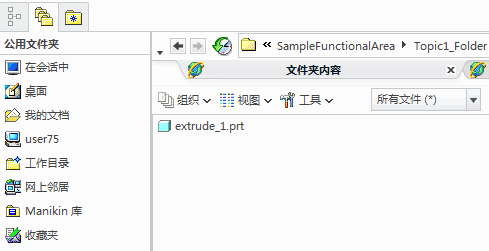
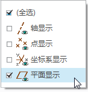
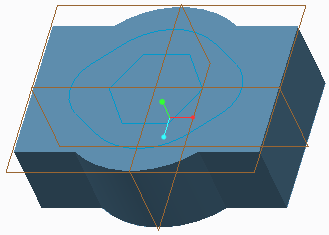

过程: 学员引言 - 使用标题
假定背景
在本练习中，您将学习如何使用标题为课程中的各个课堂练习设置 Creo Parametric 工作环境。
“关闭窗口”(Close Window) “拭除未显示的”(Erase Not Displayed)
“拭除未显示的”(Erase Not Displayed)  SampleFunctionalArea\Topic1_Folder
SampleFunctionalArea\Topic1_Folder
 EXTRUDE_1.PRT
EXTRUDE_1.PRT
-
任务 1. 配置 Creo Parametric，确保系统已设置为可以正确运行课堂练习。

只有当您在培训中心以外的计算机上运行课堂练习时才需要执行此任务，否则请继续“任务 2”。
1. 将压缩格式的课堂文件解压缩到根驱动器，例如 C: 或 D:。
- 解压缩的 ZIP 文件将自动创建默认文件夹路径，例如 C:\PTCU\CreoParametric2。
2. 找到现有的 Creo Parametric 快捷方式。
- 复制快捷方式并将其粘贴到桌面上。
- 右键单击新粘贴的快捷方式，选择“属性”。
- 选择“快捷方式”(Shortcut) 选项卡，并将“起始位置”设置为 PTCU\CreoParametric2。
3. 使用新配置的快捷方式启动 Creo Parametric。
- 将默认工作目录设置为 CreoParametric2 文件夹。然后，您即可非常容易地导航到功能区与主题文件夹。
-
任务 2. 关闭所有打开的窗口，并从内存中拭除所有对象，以避免任何可能的冲突。
1. 如果您目前有打开的文件，请从快速访问工具栏中单击“关闭”(Close)
 ，直到图标不再显示为止。
，直到图标不再显示为止。
2. 从功能区的“数据”(Data) 组中，单击“拭除未显示的”(Erase Not Displayed) 。
- 如果“拭除未显示的”(Erase Not Displayed) 对话框出现，请单击“确定”(OK)。
-
任务 3. 浏览至此过程的功能区文件夹并将其展开，将标题中指示的文件夹设置为 Creo Parametric 工作目录。
1. 注意以上标题所示的 SampleFunctionalArea\Topic1_Folder。
2. 如果需要，可从导航器中选择“文件夹浏览器”(Folder Browser) 选项卡。
3. 单击“工作目录”(Working Directory) ，在浏览器中查看当前工作目录文件夹。
- 双击 SampleFunctionalArea。
4. 右键单击 Topic1_Folder 文件夹，然后选择“设置工作目录”(Set Working Directory)。
5. 从公共文件夹部分，单击“工作目录”(Working Directory) 以显示浏览器中新工作目录的内容。

或者，您可以在浏览器中使用层叠文件夹路径来导航到主题文件夹，然后右键单击并从浏览器中选择“设置工作目录”(Set Working Directory)。
-
任务 4. 打开此过程的文件。
1. 注意课堂练习模型 EXTRUDE_1.PRT 已在以上标题中指定。
- 双击浏览器中的 extrude_1.prt 将其打开。
2. 现在，您已准备好开始课堂练习的第一项任务：
- 阅读第一项任务。
- 执行第一步，在大多数情况下该步骤将被设置为过程或练习的初始基准显示。
- 执行过程或练习中的其余步骤。
-
任务 5. 设置初始基准显示选项。
1. 设置基准显示的说明表明了要启用或禁用的基准显示类型。例如，“仅启用下列基准显示类型：”。
2. 要设置基准显示，先单击“图形中”工具栏中的“基准显示”(Datum Display)
下列菜单。
3. 接下来根据需要启用和禁用该复选框。例如，可以禁用“全选”(Select All) 复选框，并且仅启用所需的基准类型。
4. 现在，模型应如图所示。

过程就此结束。